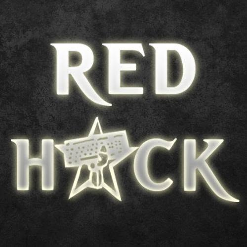

[ REDHACK TÜZÜĞÜ ]
I. BÖLÜM — RHA'NIN NİTELİĞİ VE AMAÇLARI
- R.H.A; çeşitli milliyetlerden Türkiye ve Dünya proletaryasının ve ezilen halkların teknolojik alandaki saldırı, savunma, araştırma-inceleme ve geliştirme gücüdür. R.H.A, bilişim ve iletişim sektöründe çalışan işçiler veya bu dalda uzman kişilerden oluşur. R.H.A'ya rehberlik eden, ezilen sınıf ve halkların ortak ideolojisinin bu alana yansımasıyla şekillenen REDHACK felsefesidir. Bu felsefe, Marksist diyalektiğin bu alanı yorumlamasından başka bir şey değildir.
- R.H.A, 1997 Mayıs'ında kurulmuştur. Kuruluşundaki mantık; « Marksizm dogma değil, bir eylem kılavuzudur » kuramına dayanmaktadır. Somut koşulların somut tahlili ilkesinden yola çıkan, teknoloji sektörünün bilişim ve iletişim kollarında alın teri döken yoldaşlar tarafından Türkiye'de kurulmuştur. Eylemlerine yön verecek esas merkez Türkiye olmak üzere esas görevi de Türkiye Devrimci Hareketine devrimin bu alanında yardımcı olabilmek; Türkiye ve dünya proletaryasına ve de ezilen halklara bir nebze de olsa dayanışma gösterebilmektir. Bu düşünceyle yola çıkan R.H.A, dünyaya bakış anahtarı Diyalektik Materyalizmle, başta açık ve özgür kod olmak üzere birçok teknolojik yeniliği analiz ederek, bu alandaki savaşın yönteminin adını REDHACK olarak koymuş, REDHACK sentezine varmıştır. REDHACK felsefesi; ezenle ezilenler arasındaki savaşın, gelişen teknolojik kulvarlarda ezilenler lehine kullanılmasının, geliştirilmesinin adı ve mantığıdır.
- R.H.A, hiçbir örgüte direkt veya dolaylı bağıntılı değildir. R.H.A, ülkemiz coğrafyası esas olmak üzere dünya genelinde sınıf yararına teori ve pratik gösteren, sınıf düşmanlarıyla amansız savaşan tüm devrimci örgüt ve üyelerinin sanal alandaki gücüdür. Bu beraberliği, dayanışmayı bozabilecek tüm hareketleri devrimci dayanışma bozgunculuğu olarak anlar; grupçu, benci tüm bu tür pratiklerle amansız mücadele eder.
- R.H.A'nın maddi varoluşu, çağımızda genelde teknolojinin, özelde bilişim ve iletişim teknolojilerinin nitel anlamda aldığı mesafeler ve geldiği boyutla açıklanır. Düşünsel varoluşu da bu alanda sınıfımıza ve sınıfımız yararına ne varsa saldıran egemen düşünceye bir başkaldırış, sınıfımız lehine subjektif koşullarının geliştirilmesi düşüncesidir. R.H.A, teknolojinin emperyalizmin kontrolünde olmasına ve egemenlerin çıkarlarına kullanılmasına karşın; teknolojiyi, ilerlemesinden kaynaklı özünde devrimci görür. R.H.A, teknolojiye değil; teknolojiyi ezilen halklara karşı bir baskı aracı olarak kullanan ve kendi subjektif koşullarına yedekleyerek kâr amacıyla kullanan emperyalizme karşıdır. R.H.A, teknoloji ve kollarının, tekelci kapitalist haydutların elindeki güçle, kendi çirkef emelleri için ellerinde tutulmasını lanetler. R.H.A, Devrimci hareketin, sosyalizm ve yüce komünizm mücadelesinin başarıya ulaşması durumunda, teknolojinin özüne uygun, insanlığın yararına ve hizmetinde, kolektif ve özgür bir biçimde kullanılacağı bilinciyle hareket eder. Nihai hedef komünizm için hiçbir fedakârlıktan kaçınmaz.
- R.H.A bileşeni, Marksizmi birlik için temel kriter, bütün pratiklerine yön veren teorik temel kabul eder. Türkiye ve Dünya devrimi için mücadele eden illegal devrimci Marksist örgütler başta ve öncelikli olmak üzere, enternasyonal proletarya ve ezilen halklarının yararına, teknolojik alandaki araştırma-inceleme-geliştirme, savunma ve saldırı örgütüdür. Ve bu ilke gereği, kendi konusunda, enternasyonal proletaryayı birleştirebilecek bütün çabaları gösterir. Aynı zamanda iletişim ve bilişim kollarında emek veren tüm proleter bilinçli hacker'ları, enternasyonal hacker örgütümüz Red Hackers Block (RHB) altında örgütlemeyi öncelikli görevlerinden kabul eder.
- R.H.A, üyelerini ve halkı her türden milliyetçiliğe ve şovenizme dayalı düşüncelere karşı enternasyonalizm ruhu ile eğiterek, bu tür eğilimlerin gelişmesine asla müsaade etmez.
- R.H.A, Ulusların Kendi Kaderini Tayin Hakkı (UKKTH) ilkesini kayıtsız, şartsız, koşulsuz kabul eder. Her türlü milli imtiyaz ve üstünlüğe karşı çıkar, tüm milliyetlerin tam hak eşitliğini savunur.
- R.H.A, yürüttüğü mücadele platformu olarak, iletişim ve bilişim teknolojilerini esas, diğer teknolojik platformları tali görür. R.H.A, bu mücadele biçiminde, illegal mücadeleyi esas, diğer mücadele biçimlerini tali görür. R.H.A, ülkemizdeki objektif koşulların dayatmasının neticesinde, tüm örgütlenmelerini illegal olarak yapma stratejisini benimser.
- R.H.A, kendi içinde gönüllü birlikteliğe dayanan bir dijital örgüttür. Demokratik merkeziyetçilik esaslarına göre tüm üyeleri için geçerli, bilinçli ve koşulları göz ardı etmeyen devrimci disiplin hüküm sürer. Eleştiri ve öz-eleştiriyi gelişimin en önemli şartlarından biri kabul eder. Devrimci sorumluluklarından ve felsefesinden, irade ve eylem birliğinden doğan gücünü zayıflatan ve R.H.A'yı yıkmayı amaçlayan hiziplerin varlığına asla müsaade etmez. Her türden oportünizme karşı kararlılıkla mücadele eder. Sınıf mücadelesinin sadece dışarıda olduğunu reddeder; bu mücadelenin yansıması olan sapmalarla mücadeleyi elden bırakmaz. Burjuvazinin sadece dıştan değil, içten de saldırabileceğini ve R.H.A'yı türlü oyunlarla tasfiye etmeye çalışacağının bilinciyle hareket eder. Proleter devrimci kültürü, egemen yoz kültüre karşı içte ve dışta tutarlı ve kararlı bir şekilde savunur, geliştirir ve yayar.
- R.H.A, görev olarak; Devrimci hareketin subjektif koşullarını güçlendirmenin yanı sıra, devrimin objektif koşullarında, yönetenle yönetilen arasındaki çelişkiyi gerçekleri rehber alarak derinleştirmek; devrimci hareketin gündemini yönetilenlere ve halkımıza taşıyarak, halkımızın gerçekleri öğrenmesini sağlayarak objektif şartların daha da olgunlaşmasını sağlamaktır.
- R.H.A, diyalektik materyalizm ile yorumladığı teknoloji kavramında, incelemesini yaptığı « yeni teknolojiler » ve ayakları havada kalan « özgür ve açık yazılım » felsefesini bir netliğe oturtarak « halk için hack » sentezine varmış; yani REDHACK (Kızıl Hack) sentezine ulaşmıştır. REDHACK felsefesi, her türden amaçsız, bilinçsiz teknoloji kullanımı ve düşmanlığına, hack eylemi ve oluşumuna karşı çıkar. Tüm olanaklarını « halk için hack » kavramına göre şekillendirir. Hacker'ların veya hacker gruplarının halk yararına pratik sergilemeyenlerini bilinçlendirmeye çalışırken; burjuvazi yararına kurulmuş ve devrimci olanakları yok etmeye çalışan, saldırgan faşist kontra hareket ve örgütlenmelere izin vermez. R.H.A, devrimcilerin olanaklarına karşı yapılan herhangi bir saldırıyı kendine kabul eder; saldırıya karşı savunma ve saldırı siyaseti izler. WhiteHack (beyaz hack), BlackHack (siyah hack) vb. gibi sistemin yedeği, egemenlerin popülist oyuncağı hack türlerine; sistemin karşısında, ezilenlerin yanında olan bilinçli hack felsefesi REDHACK felsefesiyle cevap verir. Bu felsefenin, bilişimcileri, iletişimcileri ve hacker'ları özgür, eşit, adil bir dünyaya götürecek yegâne felsefe olduğunu ilan eder. Hacker'lığın özüne uygun davranmaları için, tüm hacker'ları bu felsefe etrafında örgütlenmeye davet eder.
- R.H.A, hiçbir örgüte bağımlı olmamakla beraber örgütleri birleştirmek gibi maceracı ve idealist mantıkta değildir. R.H.A, aynıların ve ayrıların nedenlerinden çok, somut gerçeklikle ve eylem birlikleriyle ilgilenir; var olan devrimcileri dayanışma kültürüne göre değerlendirir.
- R.H.A, Türkiye Devrimci Hareketi başta olmak üzere, Enternasyonal Devrimci Harekete her türlü olanaklarını sağlayarak, onların düşmanla olan savaşımında teknolojik gelişimi için elinden geleni yapar. R.H.A, devrimcilerin yüce komünizm hedefine ulaşmaları için, kendi alanında hiçbir fedakârlıktan kaçınmaz. R.H.A, yüce komünizm davasında, sonuna kadar devrimcilerin bu alandaki örgütü olacağını ve hiçbir fedakârlıktan kaçınmayacağını ilan eder.
II. BÖLÜM — R.H.A ÜYELİĞİ
R.H.A'ya üye olmanın şartları şunlardır:
- Çeşitli Hack, Crack, Code, OS, Şifreleme Teknikleri, İletişim Protokolleri, İletişim araç ve sistem teknikleri, Grafik vb. konuların en az birinde uzmanlık derecesinde yetkin olması veya bu alanda işe yarayacak başka bir konuda uzman olması.
- R.H.A tüzüğünü ve REDHACK felsefesini kabul etmek, R.H.A karar ve kurallarını uygulamak, disiplinine uymak.
- Deşifre olmamış olmak, olabilecek koşullarda bulunmamak.
R.H.A'ya üye olmak isteyen her kişi, herhangi bir R.H.A üyesine bu istemini —koşulların el vermediği zamanlar hariç— yazılı olarak R.H.A katılım forumunu doldurarak verir. R.H.A üyesi de, kişinin bu istemini hiç geciktirmeden bağlı olduğu komiteye verir. Komite bileşenleri bu istemi değerlendirip, oy birliğiyle onaylarsa kendi görüşlerini ekleyerek R.H.A MK'sına (Merkez Komite) iletir. MK ilk toplantısında bunu değerlendirip, kararı —koşullara bağlı bir biçimde— yazılı olarak aynı yoldan ulaştırır. Üye isteminde bulunan her kişi adaylık forumunu detaylı bir şekilde doldurur. Üyelik işlemi kabul edilen her kişi R.H.A/Aday Üye'si ve RedStar (RedHack alt grubu) üyesi olur. RedStar, R.H.A'nın alt grubudur. R.H.A/Aday Üyelikle paralel bir şekilde yürür. RedStar'daki amaç, başvuran kişiyi tanımak, yetkinlik derecesini ölçmek, onun da R.H.A'yı tanımasını pratik içinde sağlamaktır. R.H.A Aday üyeliği ve paralelinde gelişen RedStar'ın üyeliği maksimum 6 (altı) aydır. Aday üyenin pratiğine, teorik gelişimine bakılarak 6 ay dolmadan veya 6 ay bitiminde tam üyeliğe kabul veya reddedilir. Bu 6 ay içinde R.H.A/Aday üyesi her bir aday, RedStar içinde sıkı bir denetime tabi tutulur. Gerektiği dönemlerde, bu 6 aylık R.H.A aday üyeliği ve RedStar üyeliği, MK'nin onayı alınarak bir 6 ay daha uzatılır. Bu 6 ay içinde veya bitiminde R.H.A/Aday üyesinin R.H.A/Tam üyeliğe kabul edilmesi halinde, RedStar üyeliği ve aday üyeliği biterek tam üye olur ve yeteneği göz önüne alınarak yeni bir komiteye atanır.
- İdeolojik, politik, tekniksel seviyesini devamlı yükseltmek, Marksist teoriyi devamlı ve pratikte iç içe öğrenmek, onu bir eylem kılavuzu olarak kavrayan REDHACK felsefesini kavramak, uygulamak.
- R.H.A ve ona bağlı örgütlenmelerinin yapısını, çıkan yayınları eleştirici gözle incelemek, eleştiriyi ve öz-eleştiriyi günlük hayatın vazgeçilmezi yapmak. R.H.A ve organlarını, sınıfımızı, halkımızı ve dünya halklarını bulunduğu her alanda oportünizmin, revizyonizmin her türüne karşı korumak. Bu tür sapmalara karşı uyanık, kararlı ve amansız olmak. Teknoloji alanları esas olmak üzere, misyonunu aşmadan, tüm alanlarda proletaryaya ve onun bu alandaki temsilcisi devrimci dayanışmanın ürünü R.H.A davasına zararlı her akıma amansız mücadeleyi görev kabul etmek, bu mücadelede cesaretli ve bilimsel olmak.
- White (beyaz), Black (siyah), Gray (gri) hack gibi popülist ve egemenlerin işine yarayan idealist hacking türlerine karşı ideolojik mücadeleyi yürütmek ve bu tür idealizme karşı REDHACK felsefesiyle hareket etmek, « halk için hack » yöneliminden şaşmamak.
- R.H.A'yı bir hobi olarak görmemek, reel hayatındaki örgütlü mücadelesini unutmadan R.H.A'ya önem ve zaman ayırabilmek. Gönüllü mücadeleci birliği reelde bağlı bulunduğu siyasete, dijital dünyadaki mücadelede de R.H.A'ya vermek.
- Aldığı görevi zamanında yapması, yapamayacağı görevi almaması ve nedenleriyle niçinleriyle ortaya çıkarması.
- R.H.A gönüllü birliği devrimcilerin dayanışmasının ürünüdür. Bu ürünü devrimci saflıkla korumak, güçlendirmek, ileriye taşımak. Bu devrimci birliği bozmaya yönelik her türlü hizipçi, darbeci çalışmaya karşı uyanık ve mücadelede kararlı olmak.
- R.H.A disiplinine uymak, R.H.A kararlarının uygulanmasında yaratıcı ve aktif rol oynamak.
- Proje ve eylemlerde, sınıfın, devrimcilerin, halkın çelişki ve ihtiyaçlarını, doğrularını ve menfaatlerini esas almak. Halkın dertleriyle ilgilenmek, halka hizmet edecek olanakları bu alanda yaratmak.
- Devrimci örgütlere olanak yaratacak projeler üretmek ve bu projelerde aktif rol oynamak. Yapılan her işi kolektif yapmak, kolektifi güçlendirecek kültürü yaymak.
- Devrimci ahlak ve kurallara göre yaşamak, proletaryanın sınıfsız topluma giden sürecinde, sınıf öncüsü devrimci örgütlerin sınıf yararına pratiklerini el üstünde tutmak. Devrimci örgütler arasında ayrımcılık yapmamak, davamızın menfaatini her türlü bireysel ve grupçu menfaatin üstünde tutmak. Halkla olan iletişimlerde tutarlı, alçakgönüllü, öğrenici, öğretici ve fedakâr olmak.
- Halka, R.H.A'ya, devrimci örgütlere ve kendine karşı dürüst ve açık davranmak. Hataları ve yanlışları yenme konusunda eleştiri ve öz-eleştiride açık, kararlı ve cesur olmak. Her türlü komplocu, dedikoducu, arkadan konuşmacı pratiklerin sınıf ideolojimizde olmadığını, düşmanın kültürü olduğunu bilerek buna karşı durmak ve kişisel saldırı aracı haline getirilmiş yoz-eleştiriye karşı çıkmak, eleştiriyi hastalığı tedavi amaçlı ve R.H.A içinde yapmak.
- İllegal yaşam tarzını bu alanda uygulamak, bunu delebilecek anlayışlara izin vermemek, tekno alanda kendin ve R.H.A için önlemler üretmek, illegalite kurallarını benimseyerek R.H.A dışı yaşantıda R.H.A'lı olduğunu belirtecek davranışları yapmamak. Gizemli olmak adına davayı tehlikeye atan küçük burjuva popülarizmiyle savaş vermek, kendine veya başkasına ait isim-yer-şehir-cinsiyet-fotoğraf vb. bilgileri, görevi ne olursa olsun R.H.A içinde ve dışında kimseye vermemek, direkt dosya alışverişinde bulunmamak, R.H.A dışı yaşantıda da R.H.A ile bağlantı kurulacak rumuzunu vermemek, R.H.A üyeleri dahil, hack yaşantısından kimseyle reelde buluşmamak, hack edilen veya girilen sistemde kendini deşifre edecek hareketlerden kaçınmak, her zaman en basit olaylarda bile önlemini almak-aldırmak, çeşitli sohbet kanalları ve programlarında çok dikkatli olmak, arkadaşların ile illegal hayatın arasına sınır çekmek, yeni tanıştıklarına hemen güvenmemek, güvenmeme adına herkesten şüphelenerek şüpheciliğe düşmemek.
- Yapılan işlerle övünmemek, yapılan işleri kişi adına sahiplenecek her hareketten uzak durmak.
- Benmerkezcilik, popülistlik, pozculuk, boşboğazlık, gevezelik, anlamsız merak, hava atma vb. küçük burjuva hastalıklara düşmemek, bunlara karşı mücadele etmek, R.H.A sırlarını gizlemek.
- Proleterya enternasyonalizminin görevlerini yerine getirmek, milliyetçilik, şovenizm, hemofobi vb. tüm gericiliğe karşı mücadele etmek, enternasyonalist dijital örgüt Red Hackers Block'u güçlendirmek, ilişki yaratmak.
- Bağlı bulunduğu R.H.A organında R.H.A'nın tüm siyasetini değerlendirebilmek, öneride ve eleştiride bulunmak. R.H.A'nın siyasetinin belirlenmesine aktif olarak katılmak.
- Seçmek ve seçilmek.
- Genel toplantılarda ve kendi çalıştığı organda R.H.A'nın herhangi bir kademesinde çalışan üyeler hakkında, R.H.A'da görevi ne olursa olsun eleştiri getirmek.
- Kendisine disiplin cezaları ile ilgili karar veren toplantıda hazır bulunmak.
- Kendi organının çözemediğini düşündüğü herhangi bir sorun hakkında üst kademelere (MK dahil) organ yoluyla danışmak.
- Üyelere açık toplantılara ve alt grup ile aday-üye toplantılarına katılabilmek.
- Üyelere açık yayınları okuyabilir, yazabilir, eleştirip öneride bulunabilir.
R.H.A aday üyeleri ve RedStar üyeleri; seçme ve seçilme hakkı, tam üyelerin toplantılarına katılım hakkı ve tam üyelere açık olan yayınları okuma hakkı dışında R.H.A üyelerinin sahip olduğu bütün haklara sahiptir. R.H.A üyelerinin görevleri, R.H.A/Aday üye ve RedStar üyeleri için de geçerlidir.
Her R.H.A üyesi, R.H.A/Aday Üyesi veya RedStar üyesi yazılı veya sözlü bir şekilde gerekçelerini bildirerek R.H.A'dan ayrılabilir.
R.H.A birliğini bozan, R.H.A tüzük ve kararlarına uymayan, R.H.A içi demokrasiyi zedeleyen, üyelik ve R.H.A'nın kendine verdiği görevleri amacı dışında kullanan, R.H.A disiplinine uymayan, pratikleriyle R.H.A'yı halkın ve devrimcilerin gözünden düşüren, illegaliteyi delen, REDHACK felsefesine karşı pratikler sergileyen R.H.A üye ve üye adayları çalıştığı organ tarafından veya yüksek organca sorumlu tutulur ve cezalandırılır. Suçun ağırlığına göre bu cezalar:
- İhtar
- Ağır ihtar
- Üye durumunu Aday üyeliğe çevirme
- Geçici ihraç
- Kesin ihraç
R.H.A cezaları, suçu işleyen kişinin çalıştığı organın salt çoğunluklu oyuyla verilir. Özel bazı durumlarda MK, herhangi bir organda çalışan bir R.H.A üyesi hakkında atılmaya varan cezalar verebilir. Cezalandırılan R.H.A üyesinin çalıştığı organa bu karar gerekçeleriyle iletilir. Bütün R.H.A cezaları R.H.A/MK tarafından onaylandıktan sonra kesinleşir. R.H.A üyeliğinde bir daha alınmamak üzere çıkarılma (kesin ihraç) en büyük cezadır. Üyeler hakkında alınan her karar (koşullar el veriyorsa alınmak istenen karar) vakit geçirilmeden R.H.A/MK'ya bildirilir.
III. BÖLÜM — R.H.A'NIN ÖRGÜTLENME İLKELERİ
R.H.A'nın örgütlenme ilkeleri, demokratik merkeziyetçiliğin somutumuza uygulanışıdır. Bu ilkeye göre;
- Bütün R.H.A üyeleri aşağıdan yukarıya demokratik seçimler yoluyla iş başına gelir.
- Bütün yönetici organlar düzenli aralıklarla üst organa hesap vermekle yükümlüdür.
- R.H.A'nın bütününde tek disiplin geçerlidir:
— Birey R.H.A'ya
— Azınlık çoğunluğa
— Alt kademeler üst kademelere
— Tüm R.H.A organları Merkez Komitesine tabidir.
R.H.A içi demokrasi her üyesine R.H.A'nın siyasetini ilgilendiren tüm konularda fikrini, çalıştığı R.H.A organında veya genel R.H.A üye toplantılarında savunma hakkını garanti eder. Herhangi bir R.H.A üyesi, R.H.A kararlarını yanlış bulsa da uygulamakla yükümlüdür. Karar hakkında fikrini çalıştığı parti organında, gerekse daha üst organlar nezdinde açıkça savunabilir; fakat fikrinin mücadelesini R.H.A'dan gizli ve organ dışı yapamaz. R.H.A içinde demokratik merkeziyetçilik ilkelerine göre eleştiri yapanları bastırmak, tedbirlerle eleştiri yolunu kapatmak, eleştiriyi amacından saptırmak, demokratik merkeziyetçilik ilkeleriyle uyuşmaz. Tüm R.H.A organları, üyelerini eleştirileri canlı bir tartışma ve bilinçli bir disiplinin hüküm sürdüğü ortamı yaratmakla yükümlüdür.
IV. BÖLÜM — R.H.A'NIN TEMEL ORGANLARI
R.H.A'nın temel organları bürolar ve komitelerdir. Büro ve komitelerin niteliği ihtiyaca göre şekillenir; niceliği ihtiyaca göre dar veya geniş tutulur. Her komite ve büronun bir sekreteri olur. Sekreter yoldaş, bağlı olduğu komite veya büronun yürüteceği çalışmalardan birinci derece sorumlu olur. Büro veya komitenin üst organıyla temasını sağlar. Her büro ve komitede bir de sekreter yardımcısı olur; sekreter yardımcısı, sekreterin herhangi bir sebeple görevlerini yapamaması durumunda, sekreterin görevlerini yapar.
R.H.A büro ve komiteleri; R.H.A'yı, teknolojiyi, bu alandaki savaşını elbette ki devrimin koşullarını ileriye taşıyacak bilimsel örgütlenmenin gerekliliğidir. R.H.A bürolarının hepsi MK'ya bağlıdır. Ayda bir yapılacak MK toplantılarında geçmiş görevler ve gelecek görevleri belirler. MK'ya bağlı bürolar da ilk toplantıda kaç günde bir toplantı yapacaklarını belirler.
Bürolar ve komiteler 1 (bir) yılda bir yapılan R.H.A kongresinde seçilir.
> R.H.A Kongresi
R.H.A Kongresi 2 (iki) yılda bir (koşulların el vermediği durumlarda MK yetkisiyle en fazla 6 ay uzatılabilir), R.H.A/MK'sı tarafından yapılan çağrıyla toplanır. Tüm üyeler bu kongreye katılır. Geçmişin değerlendirmesi yapılarak, gelecek perspektifler ortaya konulur. Bu kongre teknolojik ortamda yapılmakla beraber, tüm R.H.A organlarını, büro ve komitelerini seçer. Kongre kararlarını uygulamak, MK'nin sorumluluğundadır. Kongreden 2 ay önce bir kongre hazırlık komitesi kurulur; bu komite kongrenin tekniksel ihtiyaçlarına çözüm bulur. Kongreden 2 ay önce geçebilecek tartışmalar ve taslaklar, kongre hazırlık komitesine teslim edilir.
> R.H.A Komite ve Büroları
Bürolar ve komitelerde o dalda yetenekli, işinde uzman arkadaşlar yer alır. Bürolara bağlı alt komiteler bürolara, bürolar da MK'ya hesap vermek zorundadır. MK yaptığı her toplantıda büroları denetler, görevlerin yerine gelip-gelmediğini, nedenleri ve niçinlerini, geçmiş pratikleri masaya yatırır, geleceği belirler. R.H.A, uzun veya kısa vadeli büro ve komite oluşumlarını, gerekli işlere göre kaldırılabilir, değiştirilebilir, yeni kurulabilir.
> R.H.A'nın Şu Anki Uzun Vadeli Komiteleri
- Merkez Komite (MK)
- Siyasal Büro (SB)
- Basın ve İnformasyon Bürosu (BİB)
- Teknik Büro (TB)
- Enternasyonal Büro (EB)
- Hack Bürosu (HB)
- Askeri Komite (AK)
- Alt Grup Komitesi (AGK)
R.H.A/MK, R.H.A'nın üye sayısına ve kapasitesine göre kaç kişiden oluşacağı belirlenir. Görevlendirme normal koşullarda 1 (bir) yılda bir yapılan R.H.A kongresinde üyelerin salt çoğunluğuyla belirlenir. R.H.A kongresi üyelerin oy çoğunluğuyla en fazla 6 ay ertelenebilir. Yapılan seçimlerde MK esas üyelerinin haricinde bir de yedek üyeler seçilir. Yedek üyeler, asıl üyelerin görevlerini yapamadıkları koşullarda asıl üye olurlar. MK, R.H.A'nın en üst organıdır. Bu organda SB, BİB, TB, EB, HB organlarının sekreterleri görev alır. MK, R.H.A'nın önderliğidir. MK'nin görevi ortak bir irade ile R.H.A'nın yönetilmesidir. MK'da çıkan kararların büro ve komiteler ve onlara bağlı organlar vasıtasıyla R.H.A'nın tümüne hakim olmasıdır. Aynı zamanda kararların demokratik, kolektif bir şekilde alınmasını ve yürümesini sağlar. MK yeni seçime kadar iş başında kalır. Yeni seçime kadar R.H.A'nın bütün ideolojik, politik, örgütsel duruşundan ve pratiğinden sorumludur. MK'nin bir sekreteri bir de yardımcısı olur. MK sekreteri aynı zamanda R.H.A genel sekreteridir. Sekreter ve yardımcısı oy çokluğuyla, MK'nin kongreden sonraki ilk toplantısında seçilir. Sekreter seçildikten sonra MK içindeki işlerin yönlendiriciliğini yapar. Sekreterin alınan kararlarda 3, sekreter yardımcısının 2 oy hakkı vardır.
R.H.A/SB, R.H.A'nın kararlarının somuta geçirilmesi noktasında MK'nin görevlerini yapar. SB'nin MK içindeki sekreteri vasıtasıyla kendi komitesine ve ona bağlı komitelere MK'nin düşüncelerini ve kararlarını taşır. SB, R.H.A'nın ideolojik-politik duruşunu belirler. Gelecek eylemlerin, yapılacak işlerin niteliğini diğer komitelerin durumuna, gerekliliklerin ne olduğuna bakarak belirler. SB en az 3 kişiden oluşur; koşullara göre genişler, koşullara göre daralır. R.H.A'nın eğitimlerinden, yayın organlarının duruşuna, R.H.A'nın yeni eylemlerinin ne olmasından, geçmiş eylemlerin değerlendirmesine kadar belirler. Belirli zamanda komitelere çalışma grupları kurdurarak eğitim çalışmaları yaptırır. SB sekreteri aynı zamanda MK sekreteri yani Genel sekreterdir. SB, Alt grup RedStar'dan SB içine üye aktarım yapmaz.
R.H.A/BİB esasta çıkacak yayınların çıkarılması, halkın ve devrimcilerin yapılan işleri öğrenmesi konularında görevlidir. Web sayfaları, çeşitli forumlar veya sohbet kanallarının yöneticiliğini yapar. BİB, bir sekreter ve bir sekreter-yardımcısı ile beraber en az 5 kişiden oluşur; BİB sekreteri aynı zamanda MK üyesidir. BİB kendi komitesine R.H.A/ÜYE'leri öncelikli olmak üzere Aday üyelerle yani Alt grup RedStar içinden yetkin elemanları oy hakları olmamakla beraber alabilir, alt komite kurabilir. Bu büro diğer komiteleri ve üyeleri çıkacak olan yayınlar içinde görevlendirebilir, onları verdiği görevlerde denetleyip, rapor halinde MK'ya sunabilir.
R.H.A/TB, R.H.A'nın program ihtiyacını sağlayacak programcılardan oluşur. Bir sekreter ve bir sekreter-yardımcısıyla beraber en az 3 kişiden oluşur. TB sekreteri aynı zamanda R.H.A/MK üyesi ve R.H.A önderliğindeki Red Coders Team'in Genel Sekreteridir. TB kendi içine aday üyeler veya alt grup RedStar içine oy hakları olmamakla beraber eleman alabilir, alt gruplarda kendine bağlı olmak üzere kendi branşıyla ilgili yetkin aday üyelerle komite kurabilir. TB, R.H.A'ya özel programlar, code'lar haricinde, kitleye açık, devrimcilerin işine yarayacak programlar yapmakla, R.H.A'nın web sayfası ve sistemlerini programlamakla, yeni projeleri diğer komitelere fikir danışarak sunmak veya hayata geçirmekle yükümlüdür. MK'dan aldığı görevleri kendi içinde veya ona bağlı alt-komitelere sunmak, hayata geçirmek diğer komitelerdeki gibi en büyük vazifesidir.
Enternasyonal anlamdaki görevlerimizi yerine getirmekle yükümlü olan bürodur. Diğer hack gruplarına siyasetimizi taşıyacak, onlarla ilişkiler kuracak, eylem birliktelikleri örgütleyecek bürodur. Bu büro aynı zamanda örgütleyicisi olduğumuz Red Hackers Block'un örgütleyicisi ve yöneticisidir. Bu büroda ihtiyaca göre SB'den ve HB'den bir kişi bulunmakla beraber, yabancı dil bilenler öncelikli olmakla beraber EB, R.H.A aday-üyeleri veya alt grup RedStar içinden yetkin yoldaşlardan üye alabilir, onlardan kendi önderliğinde bir alt grup kurabilir. Bu büronun sekreteri aynı zamanda MK üyesi ve Red Hackers Block'un Genel sekreteridir.
Hack bürosu en az 7 kişiden oluşur. Bir sekreter ve sekreter yardımcısı vardır. Sekreteri aynı zamanda MK üyesidir. Bu büro içinde bu daldaki en yetkinler bulunur. İhtiyaca göre içinde veya kendine bağlı belirli komiteler (system hack, defaced, araştırma-inceleme, vb.) bürolar kurabilir, alt grup içinden bu komiteleri güçlendirebilirler. Aldıkları alt komite üyeleri veya kurdukları alt komitelerden diğer bürolar gibi sorumludurlar. Bu büronun amacı belirlenen hedefleri istenilen şekilde, istenilen şekile getirmektir. Ayrıca büro SB ile ortak çalışır. SB bu büronun yönelimlerine tavsiyelerde bulunmak üzere ilişki kurabilir. Ayrıca belirli eğitim çalışmalarında, kendi uzmanlık dallarında seminerler verecek, alt grupları da güçlendirecektir.
Teknolojinin belirli yeniliklerini, diğer büroların yardımıyla geliştirip, devrimci durumun objektif ve subjektif şartlarını olgunlaştıracak adımları kendine görev kabul eder. AK, MK Sekreteri tarafından atama yöntemiyle oluşturulur. AK'nin üyeleri R.H.A üyelerinden veya bilmediği üyelerden olabilir. AK, MK'da sekretere bağlıdır, hesabını sekretere, sekreter de MK'ya verir. Yapılan işler, esasta halkların çelişkilerine göre ve belirli güvenilir koşullarda devrimcilerin istemine göre yapılır. AK'nin bir sekreteri ve bir de sekreter yardımcısı olur. Bu da yine Genel sekreter tarafından atama yöntemiyle olur. AK, Genel Sekretere danışarak, kendi içinde bir istihbarat komitesi kurabilme yetkisi vardır. Bu grubun sekreteri MK içinden olabilmekle beraber, olmayabilir de.
Alt Grup RedStar ve üst komitelerin kurduğu alt komiteleri denetler. AGK, RedStar ve Aday üyelerin gelişimini gözler, RedStar'ı yönlendirir-yönetir, MK'nin kararlarının onlara verilmesi gerekenlerini onlara verir, kavratır. RedStar'ın tüm pratiklerinden birinci derecede sorumludur. Bu grubun bir sekreteri vardır, bir de sekreter yardımcısı; sekreteri aynı zamanda R.H.A/MK'sı ve RedStar Genel Sekreteridir.
V. BÖLÜM — R.H.A'NIN MALİ KAYNAKLARI
R.H.A, somut niteliğinden kaynaklı, gelirlerini esasta illegal olmak üzere, devrimci duruşun rehberlik ettiği bir şekilde yeteneklerinden yararlanarak elde eder. Diğer yöntemleri yadsımamak, kullanabilmek kaydıyla, kamulaştırmayı esas alır. Her türlü harcama, Merkez Komitesi adına ve Merkez Komitesinin denetiminde, onun onayıyla yapılır. R.H.A büro, komite ve üyeleri, Merkez Komitesinin onayıyla harcadıkları proje, eylem, olanak vb. için olan giderlerin üstündeki tüm geliri Merkez Komitesine aktarır. Bütün büro, komite ve üyeler, gelir ve giderleri hakkında düzenli rapor tutmak, hesap vermek zorundadır.

Halk için Hack
REDHACK